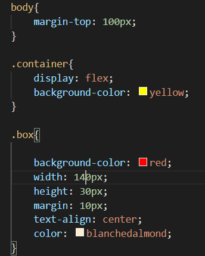
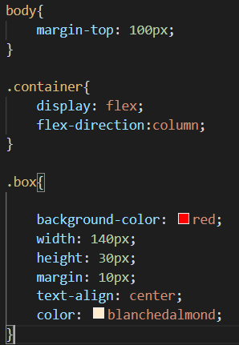
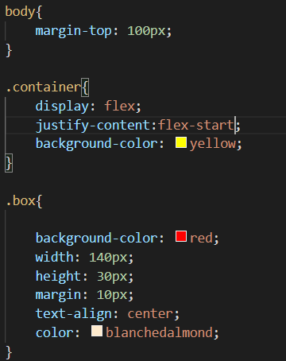
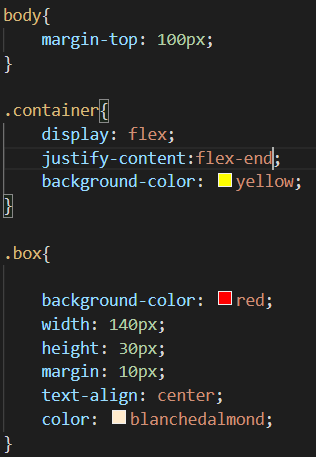
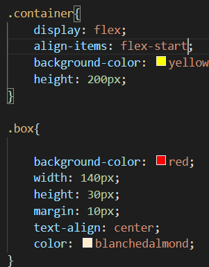

Flex özelliği alanlara esneklik kazandırarak daha kolay bir şekilde konumlandırma yapmamıza olanak sağlar.
Bu özelliği daha önce float:left komutu ile de verebiliyorduk.Flex ile bir başka komutla da verebildik.
Bu özelliğin default değeri flex-direction: row dur.Bu komut ile 1 kolona sıralama yaptık.
Bu varsayılan değerdir.Soldan hizalama yapar.
Bu özellik bitiş değeri sayfanın en sağında olacak şekilde sağdan hizalar.
Bu özellik ile öğeleri kapsayıcımızın altından hizalar.
Bu özellik ile öğeleri kapsayıcımızın üstünden hizalar.
